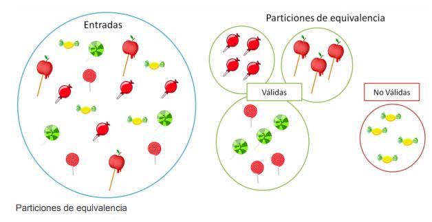

Técnica de partición de equivalencia
¿Qué es?
La división en particiones de equivalencia, también llamadas clases de equivalencia, es una técnica de pruebas de caja negra en la que las entradas del programa se clasifican en clases.Considera como perteneciente al dominio de entrada a todas las entradas que puedan tener efecto en la salida de la prueba, positivo o negativo.Todos los miembros de cada clase de equivalencia comparten ciertas características en común que no son compartidas con miembros de otras clases.
Cada clase se llama partición de equivalencia porque todos elementos en la clase prueban la misma cosa. Si uno de los elementos de una clase provoca un error, todos los de esa clase probablemente lo harán. La idea principal de esta técnica es identificar los casos de prueba usando un elemento de cada clase de equivalencia.
Identificar particiones de equivalencia
Para identificar las particiones de equivalencia es necesario examinar cada condición de entrada, que si has sido prudente estarán en las especificaciones de requerimientos del programa o aplicación. Ten en cuenta que existen dos clases de equivalencia:
- Clases válidas: valores de entrada válidos. No quiere decir que tu programa no vaya a fallar con estas entradas, sino que no debería fallar
- Clases no válidas: valores de entrada no válidos. Representan los valores de entrada que son erróneos y a los que el programa debería responder o bien rechazándolos o manejando una excepción.
Establecer las particiones de equivalencia puede ser un proceso subjetivo, por lo que dos personas podrían obtener clases de equivalencia distintas. La clave está en elegir las relaciones que determinan esas clases.
Definir particiones de equivalencia
Las clases de equivalencia se definen según una serie de directrices:
- Rangos: si una entrada está condicionada a un rango de valores (por ejemplo, edades comprendidas entre 18 y 65 años ambos inclusive), se define una clase de equivalencia válida para todos los valores pertenecientes al rango y dos no válidas, una para los valores menores al límite inferior del rango y otra para los mayores al límite superior
- Valor específico: análoga a la anterior, solo que el rango quedaría restringido a un único valor (la edad es de 18 años). Se siguen creando igualmente 1 clase de equivalencia válida y dos no válidas.
- Número de valores: también como las anteriores, pero teniendo en cuenta el número de valores introducidos (1 a 5 pasajeros sería la clase válida, 0 pasajeros y más de 5 pasajeros las no válidas).
- Perteneciente a un conjunto: cuando un valor es válido si pertenece a un conjunto (días de la semana en minúscula: «lunes», «martes»…) se define una clase de equivalencia válida para cada uno de los valores del conjunto, además de una no válida, para aquellos valores que no pertenecen a él
- Valor lógico: se corresponde a la evaluación de una condición (por ejemplo, la edad debe ser mayor o igual a 18). Se establece una clase de equivalencia válida (se cumple la condición) y otra no válida (no se cumple).